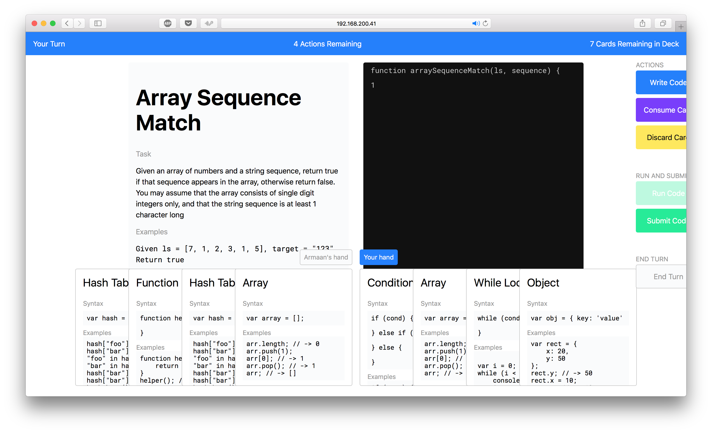

Josh ShiStudying Computer Science at Northwestern UniversityRésuméLinksTwitter →Github →Are.na →Writing →Is:Editor-in-Chief, Northwestern Undergraduate Research JournalHead Teaching Assistant, Human-Computer InteractionStudent Fellow, Knight LabWas:Software Engineer Intern, BoxTeaching Assistant, NUventionDirector, WildHacksSoftware Engineer Intern, GrouponProjects200 Essays →In which I commit to reading more essays and then writing about them.

Pyrus →Using Redux on the server to manage state in a collaborative game to support problem-solvingAscii Waves →Lil waves of text for your screenNURJ Vol. 12 →The 2016-17 issue of the Northwestern Undergraduate Research Journal.thenurj.com →An online home for the Northwestern Undergraduate Research Journal.slag →A terminal client for Slack.steganotes →A project exploring data transfer via audio signals.WildHacks 2016 →Branding and front-end work for WildHacks 2016.NURJ Vol. 11 →Redesign of the Northwestern Undergraduate Research Journal.WildHacks 2015 →Branding and front-end work for WildHacks 2015.

 NURJ Vol. 11 →
Redesign of the Northwestern Undergraduate Research Journal.
WildHacks 2015 →
Branding and front-end work for WildHacks 2015.
NURJ Vol. 11 →
Redesign of the Northwestern Undergraduate Research Journal.
WildHacks 2015 →
Branding and front-end work for WildHacks 2015.